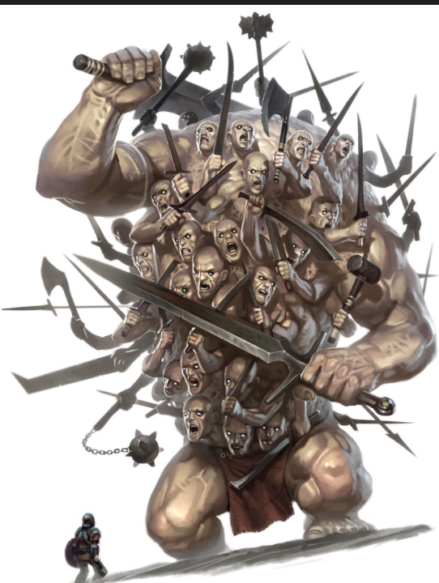

Nés de l’union d'Ouranos et de Gaïa, les Hécatonchires étaient des êtres monstrueux dotés de cent bras et cinquante têtes. Leur puissance terrifia leur père, qui les enferma dans le Tartare.
Lorsque Zeus les libéra pendant la Titanomachie, ils lancèrent des rochers par centaines sur les Titans, faisant trembler le monde sous une pluie de destruction.
Après la victoire des dieux olympiens, ils devinrent les gardiens du Tartare, surveillant les Titans enchaînés dans les profondeurs.
Ainsi, les forces du chaos furent mises au service du nouvel ordre divin.